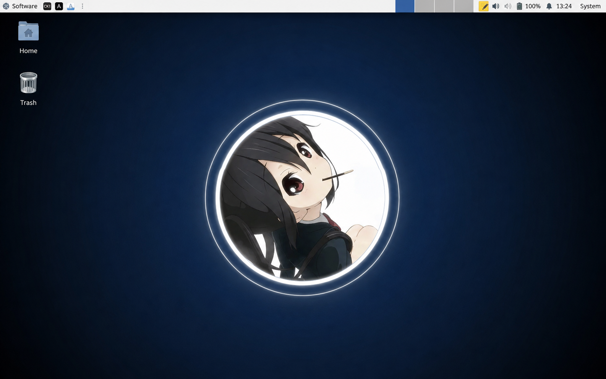
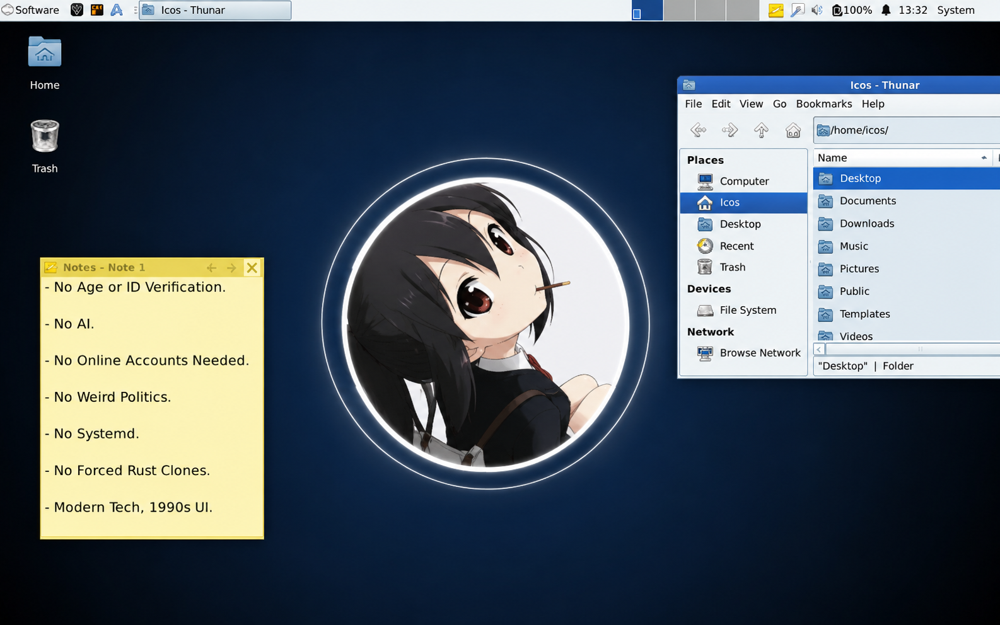

lcos-baseCore philosophical dependencies
0.1 → 0.1.1RECOMMENDEDLCOS 0.1-ish — Browser Visualization Edition
NET: probably
MERIT: 100%
LCOS
The Lunduke Computer Operating System*
*This site is satire. It is a browser visualization. It is not a Linux distribution and will not repartition your toaster.
KernelVibes 6.9.420-lcos
InitArgument Pending
DesktopLCDE (Lunduke Computer Desktop Environment)
Package format.debate
Release modelRolling Commentary
Support windowUntil the next video
Mission statement: visualize what LCOS could look like if a README, six screenshots, a GitHub issue tracker and approximately eleven gallons of Linux discourse achieved sentience.
meritocracy-daemonRanks packages entirely by how confidently they compile
3.0 → 3.0CURRENTno-cursin-filterKernel-space swear jar
1.4 → 1.5SECURITYsystemd-opinion-generatorGenerates a 47-minute response before PID 1 starts
∞ → ∞+1HELDx11-foreverBecause changing display servers is how civilization ends
1984 → 1984PINNEDReady. No package manager was harmed in the making of this page.
OPEN
Consensus blocked by somebody mentioning Wayland.
Accepted pending an ALSA/PulseAudio/PipeWire argument.
Cannot reproduce. Please provide logs and political alignment.
IN REVIEW
Reviewer requested less modern typography.
API bikeshedding currently at 84 comments.
WONTFIX
Reporter has been escorted to /dev/null.
Absolutely not. That would ruin the joke.
This panel is parody, not a mirror of real GitHub issues. The actual upstream project and discussion remain available on GitHub.
System-wide behavioral policy
The fork inherits a wonderfully compact social contract from CodeOfEthics.md:
✓ Be Excellent to Each Other.
✓ No Cursin' or Swearin'.
✓ Meritocracy Rules.
Daemon idle. Morality load average: 0.03.
This page is comedic UI around text already present in the repository; it is not a statement of QSOL policy.




